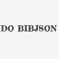

AnnotateItA Javascript tool that can be added to any webpage to allow annotation. Annotations can have tags, Markdown content, per-annotation permissions and more. The Bookmarklet allows you to annotate any web page and save annotations to a central server. Used by: • Open Shakespeare for making community-created critical editions of Shakespeare's works • Siyavula - for annotating textbooks • PaperGrader.org - for annotating and grading academic papers Read More |
BubbleTreeDisplay hierarchical (spending) data in an interactive visualization. Setup is independent from the OpenSpending platform, but can optionally be integrated with data from the OpenSpending API. Go To Site |
DashboardA dashboard of activity across the Open Knowledge Foundation. We are building a members map, GitHub stream summaries, blog aggregation and more. Go To Site |
GranoMap out and visualise networks of actors and relationships, such as the board members of major corporate entities. Go To Site |
ReclineRelax with your data. Recline is: • A Data Explorer combining a data grid, Google Refine-style data transforms and visualizations all in lightweight javascript and html. • A simple but powerful library of extensible of data components - data grid, graphing, and data connectors - which you can selectively use and build on. The Explorer can be used standalone (just download and use) or can be embedded into your own site. Recline builds on the powerful but lightweight Backbone framework making it extremely easy to extend and adapt. The library's modular design mean means you only have to take what you need. Go To Site |
|
Europe's EnergyMember States of the European Union have agreed on targets aimed at reducing greenhouse gas emissions by cutting energy consumption by 20% and increasing the share of renewables in the energy mix to 20% by 2020. The 'Europe's Energy' project gives users a set of visual tools to put these targets into context and to understand and compare how progress is being made towards them in different countries. It uses data from Eurostat, the statistical office of the European Union, which provides official statistics on EU Member States. Read More |

BibServerQuickly and easily share collections of bibliographic metadata. Think of what this data actually is – a record of work, a map to the knowledge of humanity. Go To Site |
|
YourtopiaYourtopia allows the user to construct a measure of social progress world-wide based on your preferences for development. Participate in a global effort to improve tracing of humanity's progress towards the Millennium Development Goals. Read MoreYourtopia: ItaliaHelp analyse social progress at a time in which Italy is undergoing substantial reforms and in which it is crucial to keep track of social divides across our country. Read More |
Weaving HistoryCreate 'factlets' - places, people, events - and string them together into 'threads' at the click of a button. Visualize the results temporally and spatially, import Wikipedia articles and more... Read More |
|
Versioned Domain ModelA package which allowing you to 'version' your domain model in the same way that source code version control systems such as Git allow you version your code. Read More |
DPMA user tool for distributing, discovering and installing data (and content) 'packages', linked to datahub.io and the CKAN project. Read More |